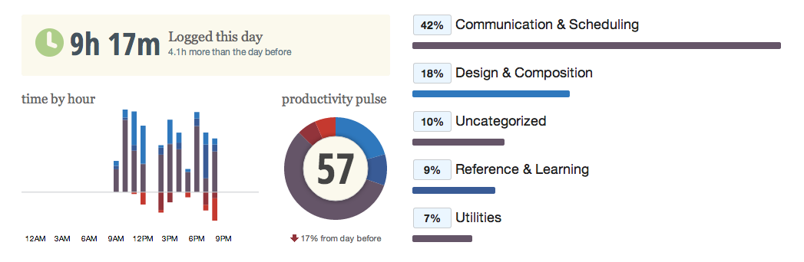
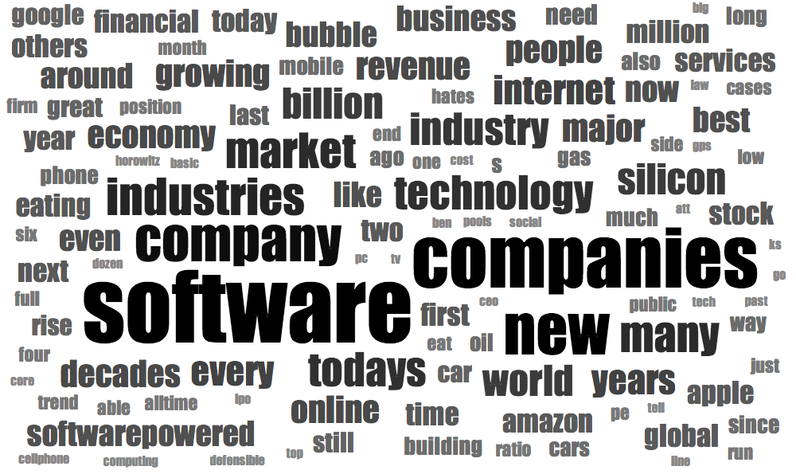

Chloe's Blog
#Skimlinks to Makers08.02.14
Whilst I was working on Weave we used a python script to email #LDNFashionBloggers en masse. It filtered them based on a twitter_handle = [twitter_handle, follower_count, blog_name, location, find_email_address, total_name, tracking_id]. The email they received made it appear as though we'd taken the time to contact them personally, resulting in a lot of great feedback. One of the reasons i'm learning ruby is because I want to be able to write hacks like that myself!
Currently my standard workday looks like this:

My mum can't understand why I'm trying to teach myself to code;
"Why do you want to spend the rest of your life behind a computer?"
Because I already do spend my life behind a computer!
If I knew how to code it would transform my relationship with technology.
With a solid foundation in web development I could quickly build websites, applications and life hacks. I could automate repetitive tasks. I'd be able to create platforms that allow causes and products to reach huge numbers of people. I could stop selling my time for money and work instead on problems that I care about.
I don't want to spend the rest of my days sending emails...
< h1 >I want to be a Maker < /h1>
At the moment i'm in a lonely death zone. Missing semicolons pose a serious threat to my development. Coding is a perishible skill and learning in a piecemeal, unsystematic way after work and at weekends is slow and painful.
Spending 12 weeks with expert tutors and other equally committed people would change everything.
#SkimlinkstoMakers - can you help?
Something for Valentines Day02.02.14
Date Night as a Service - Like FOAAS, but much sweeter.
Blank Slate Challenge19.01.14

Why Software Is Eating The World represented by a wordcloud
I usually rely heavily on my CFG notes, Stack Overflow and Google to hack things together so, this week I've set myself the challenge of writing something completely from scratch.
I ended up with this script that counts the number of times words appear in a txt.file.
My code is fugly.
In the end I didn't even use methods.
But...
it works :)
If we use - Marc Andreessen's post, we learn ...
Words that occur more than 7 times:
software 49
companies 34
new 23
company 18
industries 13
market 12
many 12
todays 11
technology 11
industry 10
world 9
billion 9
silicon 9
years 8
internet 8
every 8
the word count is 773
software appears 49 times :)
the number of words that begin with a in this file are 1074
I realized later that this is the basic premise that word clouds run on. You can experiement with you own here
How am I doing?10.01.14
Establishing the metrics you're going to optimise is a critical part of product development.
Ways of measuring the performance of a product include:
- Revenue - though with freemium or advertising models this isn't realised until later
- Profit - ditto
- Page views
- Number of downloads
- Engagement time
- Retention over time
Recently I cames across the concept of a "the Net Promoter Score" (NPS) in Inspired: How to make products people love.
"Ask your customers how likely they would be to recommend your product, on a scale of 0-10. Those that rate 9 or 10 are considered "promoters" (they're out there telling their friends how much they love your product, and are actively evangelizing for you); those that rate 7-8 are lukewarm or neutral; and those that rate 0-6, the "detractors," are not likely to recommend your product, and may even be actively warning their friends about your product. If you take the percentage of promoters and subtract the percentage of detractors, you get the NPS. This essentially tells you if you have more people cheering for you or against you."
I like this metric because with Apps it's particularly critical to create a product that people feel compelled to evangelize. Cultivating word of mouth recommendations, as well as being extremely cost-effective sales and marketing, is a powerful way to compete with the 1 million (and counting) other apps in the app store. Have a look at your phone - what percentage of your apps made it onto your phone because a friend recommended them?
In essence the Net Promoter Score measures whether you have happy customers or not, typically a great way to access whether you are doing a good job. Though if you are loosing money on every sale it is possible to have customers that are too satisfied!
Parting words from Marty Cagan -
"If you don't already measure your NPS, consider doing so as soon as possible. Then you can start watching how the changes you make to your products impact this score. Make sure you're always moving in the right direction, and consider the impact on the NPS of everything you do."
My Dad is a phenomenal chef. I want to make a website to house his recipes so I can recreate the magic when i'm not chez donegan. I came up with this project because I want to learn how to work with databases. I don't want to have to make individual html pages for each recipe so i'm going to need to make some of the pages dynamic.
Product Spec
- Submit a recipe
- Upload a picture
- Browse Recipes
- Search for a Recipe
- Recipe suggestions based on ingredients to hand
EngineeringLanguage:Ruby
Currently I don't know whether I can use Sinatra (which i've used once before) or if it's better to take the plunge and begin to work with Rails. I'm also not sure if I'll need to work with an external database (mongoDB?) and whether there is a particular database which compliments Ruby.

The idea of the this project is to learn what I need as i go along. I know that when I'm coding I think in terms of what I know how to do. Given that, I decided to mock up the site to ensure that I'll end up with the functionality that I want. From what I understand Interactive Designers use wireframes to come up with a structure that makes sense for a number of user journeys, thinking about tasks to be completed, navigation and the conversion funnel. Visual Designers then determine colours, the font & tweak the layout. I haven't thought about that yet.
However... I've just finished "Don't Make Me Think" by Steve Krug. He argues that good design isn't about colours, font styles and sizes, it's about making websites that are intuitively easy to use (i.e don't make them think!). Steve points out that beginners often create Websites assuming that the user will start on the homepage. However it's common for a user to arrive on a page in the middle of a site after following a link from another site or found a page via a search engine. If a website is well designed a person should be able to answer the following questions no matter where they are in the site.
- What site is this? (Site ID)
- What page am I on? (Page Name)
- What are the major sections of the site? (Sections)
- What are my options at this level? (Local Navigation)
- Where am I in the scheme of things?
- How can i search?
I tried to bear this is mind whilst I was mocking up chezjustin.com but if you can see ways that the design could be improved, get in touch!
@iamchloedonegan
Fruity Marketing 02.01.14
Joe Cross gives away juice recipies and copies of his film " Fat Sick & Nearly Dead" for FREE.
Bananas?
There's method in his madness.
- Step 1
- Do a branded challenge, in his case "60 days consuming only green fruit n' veg juice"
- Step 2
- Make a film documenting what you learn and submit the movie to film festivals
- Step 3
- Write a recipe book. After completing the challenge Joe is now an authority on Juicing.
- Step 4
- Put together a website and install affiliate links partnering with blender manufactures
- Step 5
- Get a timely spread about detoxing in the January edition of the Sunday Times Style magazine (- distribution 10 million) .Talk about a "Juice Reboot" and advertising a link to the free copy of the film (exclusively for readers in exchange for an email address)
- Step 6
- Email your juicy distribution list about your next talk/ movie/ book from the Bahamas